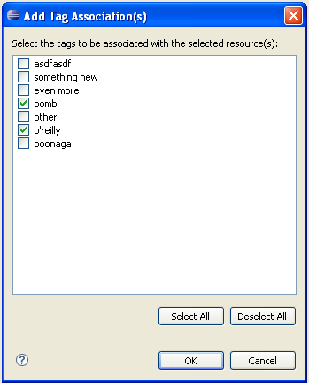

So, what does this thing look like? Here, take a look.
| Tag View Manager - used to manage the tags in the workspace tag set. | |
|  | Add Tag Association Dialog - used to add tag associations to selected resources. |
| Context Menu - right-click on a resource to add/remove tag associations. | |
| Tag Edit Dialog - used to create/edit tag information. | |
| Resource Label Decorator - decorated resource shows that its tagged (the little red T) | |
| Tag Search Page - tag search extension page | |
|
Tag Search Results Page - the tag search results |